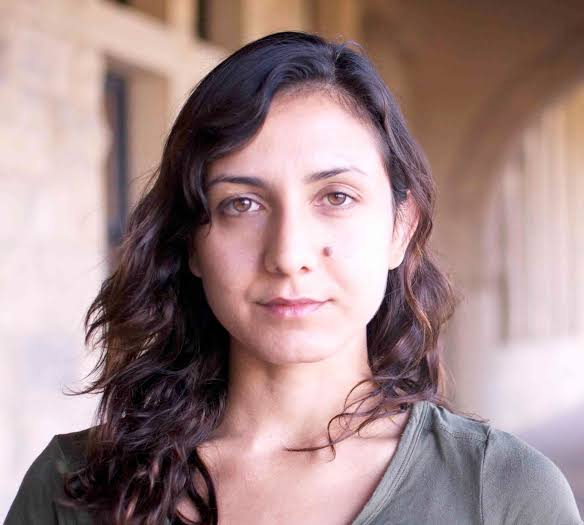

About the Author

Cultivating a Strange Reading Experience. Giving voice to feminine rage and rot.
Ottessa Moshfegh is a Boston born author who has gained recognicion for both her distinct literary voice as well as the range and variety of stories she chooses to tell.
From her 2014 novella McGlue; a queer, Shakespearian, naval story set in the middle ages... to her short story collection Homesick for Another World (2017), which follows various subjects through the strangeness of their lives, capturing the uncanny of both suburbia and urban settings, Moshfegh's writing feels fresh and daring.
Her 2018 novel 'My Year of Rest and Relaxation' was met with both high praise and crisism. Particulary after it's virality within the 'book-tok' community of the platform TikTok, Moshfegh's work could be seen as re-igniting an apetite for reading among younger generations. At the same time, her books have sparked debate around the implications of protagonists who lack a moral code, and which stories should or should not be told. Moshfegh's voice is undeniably a relevant one in the cannon of contemprary new literature.
Explore Her Work
Moshfegh does not have a traditional website, but you can check out her substack to see her recent articles and writing prompts.